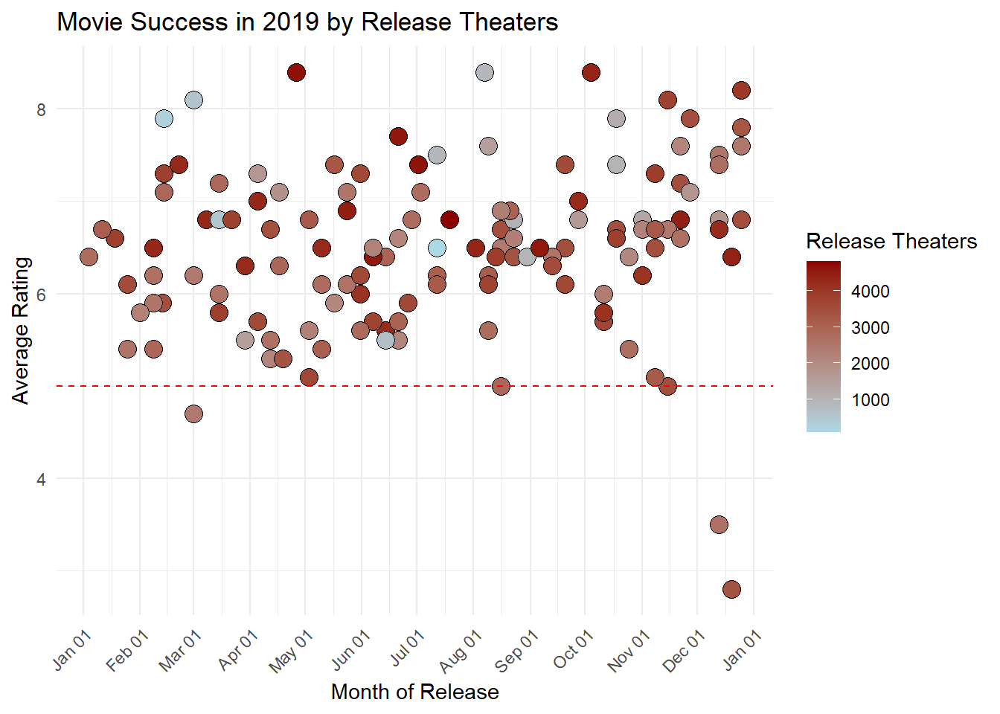
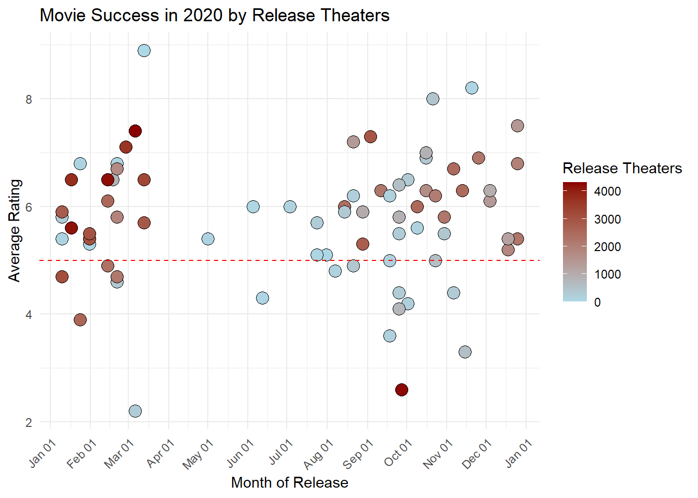
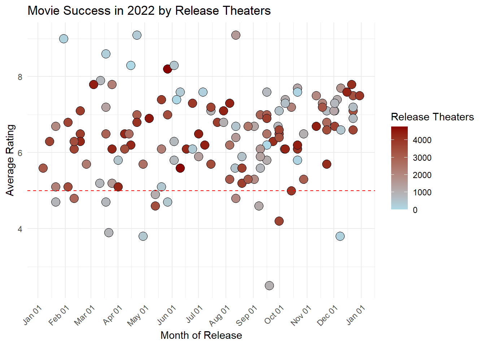

| Title | Release Year | Release Date | Released Theaters | Total Gross Value |
|---|---|---|---|---|
| Avengers: Endgame | 2019 | Apr 26 | 4,662 | $858,373,000 |
| The Lion King | 2019 | Jul 19 | 4,802 | $543,638,043 |
| Star Wars: Episode IX - The Rise of Skywalker | 2019 | Dec 20 | 4,406 | $515,202,542 |
| Frozen II | 2019 | Nov 22 | 4,440 | $477,373,578 |
| Toy Story 4 | 2019 | Jun 21 | 4,575 | $434,038,008 |
| Captain Marvel | 2019 | Mar 8 | 4,310 | $426,829,839 |
| Spider-Man: Far from Home | 2019 | Jul 2 | 4,634 | $390,532,085 |
| Aladdin | 2019 | May 24 | 4,476 | $355,559,216 |
| Joker | 2019 | Oct 4 | 4,374 | $335,451,311 |
| Aquaman | 2019 | Dec 21 | 4,184 | $335,061,807 |
Analysis on Movie Success Indicators
Abstract
In this study, we study the variables contributing to movie success, focusing on the interplay between a movies’ genre, number of theaters showing, the moth of release, and the year of premiere, particularly in the context of the pre and post-COVID-19 era, spanning from 2019 to 2022. This comprehensive analysis aims to shed light on the nuanced relationship between these variables and movie success, highlighting how the cinematic landscape has evolved in response to the COVID-19 pandemic. The findings of this study enrich our understanding of the determinants of cinematic success, providing valuable insights for filmmakers, distributors, and industry strategists in navigating the changing film industry.
1 Introduction
In the realm of global entertainment, movies hold a pivotal role, not only as a form of artistic expression but also as a significant driver of cultural and economic activity. The advent of COVID-19 has precipitated profound changes across the global media landscape, altering audience behaviors and consumption patterns(Chauhan and Shah 2020). The surge in online media consumption during the pandemic has brought unprecedented challenges and transformations to the traditional movie industry. This shift has prompted a reevaluation of what factors contribute to a movie’s success in an era where digital platforms are increasingly dominating. Against this backdrop, this paper aims to analyze several indicators related to movie success, taking into account the impact of COVID-19 on both the production and consumption of films. By examining the interplay between various factors and movie ratings, this study seeks to uncover insights into the dynamics of movie success in a rapidly evolving media environment.
Employing a multifaceted analytical approach that combines genre classification, theaters metrics, seasonal release timing, and annual trends, we probed the determinants of cinematic success in the fluctuating entertainment landscape from 2019 to 2022. Our study meticulously compiled data from Box Office Mojo and IMDb, focusing on films that achieved a commendable rating of 5/10 or above, signifying both critical and popular acclaim. Through the application of advanced statistical techniques and web scraping tools, we dissected the top 200 grossing films to unravel the intricate relationship between these variables and their collective impact on a movie’s success. A higher performance in these metrics typically correlates with a movie’s ability to resonate with diverse audiences, navigate distribution challenges, and capitalize on favorable release windows. This analysis not only sheds light on the evolving criteria for what makes a movie successful in the digital age but also offers insights into the strategic considerations filmmakers and distributors must weigh in an increasingly competitive and segmented market.
The paper is structured to facilitate a comprehensive understanding of the study and its implications. Following Section 1, Section 2 presents the data, detailing the data sources, analytical techniques, and the rationale behind the chosen methods. Section 4 discusses the results. Section 5 provides an in-depth discussion of these findings.
2 Data
This section presents the dataset we used to analyze the determinants of movie success from 2019 to 2022, covering the transformative period of the COVID-19 pandemic. Sourced from Box Office Mojo and IMDb, it allows us to trace trends and examine how industry shifts have influenced film performance and audience reception during these years. The data provide a vital context for understanding the interplay between movie success and external variables within this significant timeframe.
2.1 Source and Methodology
The data collection for this study involved two main sources: Box Office Mojo and IMDb. From Box Office Mojo, we obtained data on the top 200 grossing films released from 2019 to 2022 using (Wickham 2024; Wickham et al. 2019). The information collected through web scraping included movie titles, total gross earnings, release years, dates, and the number of theaters each film was shown in. This set of data provides a foundation for understanding box office performance across a significant period, allowing us to analyze trends in audience preferences and theatrical success
In parallel, we downloaded a comprehensive dataset from IMDb, which includes detailed information on all films since the inception of the cinema. Key data points extracted included movie titles, release years, genres, ratings, number of votes, and IMDb primary keys. The primary key is crucial as it uniquely identifies each film in the IMDb database, helping to avoid confusion with films that may share the same titles but differ in content or release periods.
The integration process involved merging the data collected from Box Office Mojo with the IMDb dataset using (Wickham et al. 2023, 2019; Richardson et al. 2024; Müller 2020). We focused on a subset of 800 films listed in the Box Office Mojo data, correlating them with ratings from IMDb. The merger was facilitated by using the movie titles and release years as primary matching criteria to ensure accuracy in the data combination process. Special attention was given to handling discrepancies such as different naming conventions or release dates, using IMDb’s primary keys to resolve any ambiguities.
The final dataset after merging and cleaning comprised 479 films that had sufficient data on both box office performance and IMDb ratings. This dataset included multiple variables of interest such as movie names, total gross values, release years, number of theaters, genres, IMDb ratings, and number of votes, which are essential for conducting a thorough analysis of factors influencing cinematic success.
2.2 Variables
To elucidate the multifaceted dynamics of movie success, we compiled a summary table using (Zhu 2024) that systematically presents a detailed description of each variable, explaining its relevance and potential influence on movie ratings, which serve as a proxy for movie success. This approach allows us to dissect the components that could potentially interplay to affect a film critically.
Table 1 presents the top ten highest-grossing films of 2019, displaying their titles, release dates, the number of theaters they were released in, and the total gross revenue, which illustrates the commercial success of these blockbuster films.
| Title | Release Year | Genres | IMDb primary key |
|---|---|---|---|
| Carmencita | 1894 | Documentary,Short | tt0000001 |
| Le clown et ses chiens | 1892 | Animation,Short | tt0000002 |
| Pauvre Pierrot | 1892 | Animation,Comedy,Romance | tt0000003 |
| Un bon bock | 1892 | Animation,Short | tt0000004 |
| Blacksmith Scene | 1893 | Comedy,Short | tt0000005 |
| Chinese Opium Den | 1894 | Short | tt0000006 |
| Corbett and Courtney Before the Kinetograph | 1894 | Short,Sport | tt0000007 |
| Edison Kinetoscopic Record of a Sneeze | 1894 | Documentary,Short | tt0000008 |
| Miss Jerry | 1894 | Romance | tt0000009 |
| La sortie de l’usine Lumière à Lyon | 1895 | Documentary,Short | tt0000010 |
Table 2 offers an overview of basic metadata from IMDb for an early set of films, including titles, release years, genres, and IMDb primary keys, providing a foundational dataset for analyzing historical trends in film characteristics.
| Rating | Number of Votes | IMDb primary key |
|---|---|---|
| 5.7 | 2037 | tt0000001 |
| 5.7 | 272 | tt0000002 |
| 6.5 | 1988 | tt0000003 |
| 5.4 | 178 | tt0000004 |
| 6.2 | 2746 | tt0000005 |
| 5.0 | 183 | tt0000006 |
| 5.4 | 853 | tt0000007 |
| 5.4 | 2183 | tt0000008 |
| 5.3 | 210 | tt0000009 |
| 6.8 | 7510 | tt0000010 |
Table 3 summarizes the IMDb ratings and the number of votes for a selection of films, alongside their unique IMDb identifiers, giving a snapshot of audience and critical reception which is essential for assessing a movie’s success and popularity.
| Title | Release Year | Release Date | Genres | Rating | Released Theaters |
|---|---|---|---|---|---|
| Mortal Kombat | 2021 | Apr 23 | Action,Adventure,Fantasy | 6.0 | 3114 |
| Motherless Brooklyn | 2019 | Nov 1 | Crime,Drama,Mystery | 6.8 | 1342 |
| Alita: Battle Angel | 2019 | Feb 14 | Action,Adventure,Sci-Fi | 7.3 | 3802 |
| Shazam! | 2019 | Apr 5 | Action,Adventure,Comedy | 7.0 | 4306 |
| Pet Sematary | 2019 | Apr 5 | Horror,Mystery,Thriller | 5.7 | 3585 |
| Jungle Cruise | 2021 | Jul 30 | Action,Adventure,Comedy | 6.6 | 4310 |
| Fantasy Island | 2020 | Feb 14 | Fantasy,Horror,Mystery | 4.9 | 2784 |
| A Journal for Jordan | 2021 | Dec 25 | Drama,Romance,War | 6.0 | 2500 |
| The Rental | 2020 | Jul 24 | Drama,Horror,Mystery | 5.7 | 250 |
| The Little Things | 2021 | Jan 29 | Crime,Drama,Mystery | 6.3 | 2206 |
Table 4, crafted using sophisticated tabulation methods, provides an initial glance at the variables influencing movie success from 2019 to 2022. To dissect this table further, ‘Title’ denotes the unique name given to each film, serving as the primary reference for our analysis. The ‘Release Year’ and ‘Release Date’ columns offer temporal context, marking the specific time a movie entered the market, which is instrumental in understanding seasonal and annual market trends. The ‘Genres’ category unravels the stylistic and thematic fabric of a movie, which is vital in gauging audience appeal and genre popularity. ‘Rating’, derived from IMDb, reflects the aggregated critical and audience reception on a scale of 1 to 10. Lastly, ‘Released Theaters’ quantifies the scale of a movie’s distribution, a critical factor in its commercial reach. Together, these variables are woven into our analysis to elucidate the tapestry of factors that lead to a movie’s success.
2.2.1 Relationship between Movie Success from 2019 to 2022 by Release Theaters



The visual data presented in Figure 1 to Figure 4 illustrate the relationship between the average IMDb ratings of movies and the number of release theaters across four consecutive years—2019 to 2022. Each figure provides a scatter plot, depicting individual movies as points positioned according to their average rating and the count of release theaters.
In the 2019 chart, there is a noticeable cluster of films with higher ratings shown in a greater number of theaters. Moving into 2020, the dispersion of points widens, reflecting the disruption caused by the pandemic on theatrical releases and possibly the ratings. The impact of the pandemic is further visualized in the 2021 graph, where the concentration of films in theaters is visibly lower, and the spread of ratings appears more variable compared to the pre-pandemic era. The 2022 visualization sees a return to a pattern more reminiscent of 2019, with many films achieving higher ratings also enjoying broader theater release.
2.2.2 Relationship between Movie Success from 2019 to 2022 by Genres


Figure 5 to Figure 8 collectively offer a graphical representation of movie ratings by genre from 2019 to 2022. These visuals chart the average ratings each movie genre received in their respective years, depicted against a backdrop that suggests the frequency of each genre’s occurrence and its success rate among audiences and critics.
2.3 Measurement
In our methodology, we delve into the origins and methods by which the data was collected from Box Office Mojo and IMDb, two comprehensive and authoritative sources in the film industry.
Box Office Mojo provides detailed box office statistics, which are gathered from distributors and exhibitors. The data encompasses figures such as total gross values, which are routinely collected from cinema ticket sales, and released theaters count, which is reported by movie theaters. The release dates of movies are also meticulously tracked, providing precise temporal markers for each film’s market entry.
IMDb is a rich repository of film information, where data on movie titles, release years, genres, ratings, and number of votes are accumulated from various contributors, including production companies, distributors, and public domain information. IMDb’s primary keys ensure a unique identifier for each film to maintain data integrity across their platform.
By synthesizing data from these platforms, we constructed a comprehensive dataset that offers insights into the determinants of movie success. The movie title serves as the foundational identifier, while the release year and date reflect market entry timing. Genres categorize films stylistically, ratings measure critical and audience reception, and the number of released theaters indicates market distribution scale. Together, these data points furnish a multifaceted view of cinematic performance in the contemporary landscape.
3 Model
Logistic regression is used when the dependent variable is binary, where the outcome is only between 0 and 1. Moreover, logistic regression is intended to model the probability that the dependent variable belongs to a particular category. Logistic regression is a special case of binomial regression, where each observation is a single Bernoulli trial.
In the context of our paper, we will fit our multi-level model with the Logistic regression to discover the correlation between movie success and predictors that could effect the outcomes. We will model the possible effects of release year and number of theaters on movie ratings using logistic regression.
3.1 Model set-up
\[\begin{align} y_i|\mu_i &\sim \mbox{Bern}(\mu_i) \\ logit(\mu_i) &= \beta_0 + \beta_{y[i]}^{year} + \beta_2 \space \times \space theater_i \\ \beta_0 &\sim \mbox{Normal}(0, 2.5) \\ \beta_{y[i]}^{year} &\sim \mbox{Normal}(0, 2.5) for \space y = 2019, 2020, 2021, 2022 \\ \end{align}\]
- \(y_i\) is a binary outcome that follows a Bernoulli distribution with success probability \(\mu_i\).
- \(\beta_0\) is the global intercept that represents the log-odds of success.
- \(\beta_{y[i]}^{year}\) is the random effect for release year, indicating that the log-odds of success can vary by the release year of the observation.
- \(\beta_2\) is the coefficient for the continuous predictor \(theater_i\) indicating how the log-odds of success changes with the number of theaters.
We run the model in R (R Core Team 2023) using the rstanarm package of Goodrich et al. (2022), broom.mixed Bolker and Robinson (2022), and Gabry et al. (2019). We use the default priors from rstanarm.
3.2 Model justification
The goal of our model is to estimate the effects of the number of theaters and the release year on the log-odds of the binary outcome \(y_i\). This will help in understanding how the likelihood of success is influenced by these predictors under the model of logistic regression. This model is well-suited for our binary outcomes with hierarchical data as Binomial family is the standard approach for binary outcome variables in logistic regression. It is specifically designed to handle the 0/1 nature of binary data and to estimate the probability of movie success.
4 Result
This section unveils the core findings on the interplay between movie success and its determinants, with a particular focus on the roles of distribution scope and genre. It dissects how factors such as social class and the sweeping effects of the COVID-19 pandemic have influenced cinematic ratings and audience engagement.
4.1 Data Visualization
By examining Figure 1 to Figure 4, the distribution of movie ratings against the number of theaters in which they were released, we draw the following observations:
In 2019, films shown in more theaters often enjoyed higher IMDb ratings, suggesting a link between distribution breadth and success. The trend was disrupted in 2020, likely due to the pandemic, with a drop in theater counts and a wider spread in ratings. Nevertheless, films in more theaters still trended towards higher ratings. By 2021, as theaters increased akin to pre-pandemic levels, the correlation between extensive releases and ratings strengthened, implying a rebound in film success. In 2022, the pattern solidified, reaffirming the notion that widespread releases tend to be associated with higher ratings, indicative of commercial success.
Overall, the data from 2019 to 2022 illustrate a consistent theme: movies that secure a wider release tend to have higher average ratings. While the pandemic year of 2020 is an outlier, showing a clear disruption in this trend, the following years demonstrate a return to this pattern.
To further examine the trends in movie ratings by genre, we have segmented the data into various categories. The average rating for each genre is calculated and presented according to the corresponding year. In the figures, genres are denoted by their names along the x-axis, with the average IMDb rating depicted on the y-axis. From Figure 5 to Figure 8, it is noticeable that certain genres consistently perform above the average rating of 6.5, marked by the dashed line. For instance, in 2019, genres like War, Documentary, and History are observed to have higher average ratings compared to Family or Sci-Fi. Over the span of four years, genres such as Documentary and Biography maintain a position above this average line, indicating a persistent favorability among audiences or critics. Conversely, genres like Horror show a fluctuation below this average line, suggesting a less consistent reception. Notably, the figures demonstrate a shift in genre popularity and critical reception over time, with some genres like Music and Western showing variable positions across the years. Additionally, the narrowing gap between the highest and lowest average ratings over the years implies a convergence in the critical reception of diverse genres. This trend suggests an evolving audience palate, where the distinction in preference for certain genres may be diminishing
4.2 Model Visualization
| (1) | |
|---|---|
| (Intercept) | 1.692 |
| theaters | 0.000 |
| Sigma[release_year × (Intercept),(Intercept)] | 0.556 |
| Num.Obs. | 479 |
| R2 | 0.061 |
| R2 Marg. | 0.021 |
| Log.Lik. | −123.048 |
| ELPD | −127.9 |
| ELPD s.e. | 13.9 |
| LOOIC | 255.7 |
| LOOIC s.e. | 27.8 |
| WAIC | 255.7 |
| RMSE | 0.27 |
Table 5 showcases the estimated effects of the number of release theaters and the release year on movie ratings. The model’s intercept is significant, indicating that the average log-odds of a movie being highly rated is not zero when all predictors are at their reference levels. However, the predictor ‘theaters’ has an estimated coefficient close to zero with a non-significant p-value, suggesting that the number of theaters alone does not have a strong predictive power on movie ratings when other variables are accounted for. The variance component for the release year interaction with the intercept (Sigma[release_year × (Intercept),(Intercept)]) is noteworthy. It implies that there is a year-to-year variability in movie ratings that is not captured by the other variables in the model. This could point to other unobserved factors that are changing over time and impacting movie ratings. The low R2 values indicate that while the model captures some of the variability in movie ratings, a substantial amount of variation remains unexplained, which is not uncommon in complex social phenomena like movie success.

To better understand the model’s results, we visualize the data with Figure 9. This visualization conveys the conditional means of movie ratings by release year with corresponding density distributions, offering a clear depiction of the rating trends over the years in our dataset.
The plots illustrate a shift in the distribution of movie ratings across the years. In 2020, the spread of ratings is notably wider compared to other years, likely reflecting the turbulent conditions of the film industry during the pandemic. The years 2021 and 2022 show a contraction of rating distributions, which could be interpreted as a sign of stabilization in the industry as it recovers from the pandemic’s impacts.
The visualized data from Figure 9 underscores the influence of temporal factors on movie ratings, aligning with the Model Summary’s indication of year-to-year variability. It visually reaffirms the narrative that external factors, such as the pandemic, have had a tangible effect on the industry, potentially altering audience’s rating behaviors.
The synthesis of results from Table 5 and Figure 9 reveals a complex picture of the factors influencing movie ratings. The number of release theaters, a traditional indicator of movie success, does not show a significant impact in the model. Instead, the yearly variations and the spread of ratings underscore the multifaceted nature of movie success and point to a changing landscape influenced by broader, perhaps global, trends and events.
5 Discussion
This research offers fresh insights into the dynamics of film industry success, quantitatively reinforcing the influence of distribution breadth and genre on movie ratings. Our approach illuminates how external factors such as a global pandemic can act as catalysts for enduring changes within the industry, shifting not only audience consumption patterns but also the strategic direction of film distribution and production.
5.1 Findings
The analysis conducted in this study substantiates our hypotheses regarding the determinants of movie success. In 2019, the model reveals a notable trend where high ratings were associated with a substantial number of movie releases, suggesting that a greater distribution reach was often a precursor to higher ratings. This aligns with the prevalent industry notion that films with larger theatrical releases tend to be of higher quality, as they are anticipated to perform better and are thus allocated more screens. The year witnessed an overall high quality in movie production, reflected in the ratings, which in turn influenced the number of theaters willing to showcase these films.
However, 2020 marked the onset of a cinematic winter, coinciding with the global spread of COVID-19. The pandemic’s disruption is evident in the significant deviation observed in the distribution of ratings and release patterns. As we progressed into 2021, the data pointed to a lowered overall rating and a reduced number of theater releases. Even films that garnered high ratings did not enjoy extensive distribution, reflecting a shift in consumption habits due to the pandemic. This not only affected the economic market but also potentially the quality of the films produced, as the industry grappled with new constraints and changing audience behaviors.
5.3 Weaknesses and Future Research Directions
One of the main limitations of our study is the reliance on theater releases as a measure of success, without accounting for the growing prominence of digital platforms. The model also does not capture the qualitative aspects of films that could influence ratings, such as marketing efforts, critical reviews, and word-of-mouth.
Future research should aim to integrate data from digital releases and consider alternative success metrics such as viewer engagement and retention on streaming platforms. It would also be beneficial to investigate the role of marketing and social media in influencing both ratings and viewership patterns.
Additionally, with the industry’s pivot towards digital platforms, examining the economics of streaming services, including production costs and revenue models, would provide a more comprehensive understanding of contemporary movie success. Research could also explore the long-term impacts of the pandemic on consumer preferences and whether the changes observed during this period persist or revert to pre-pandemic trends.
Appendix
6 Model details
6.1 Posterior predictive check

From spread and the central tendency of the simulated lines in Figure 10, it seems that the model predicts a very steep change in the probability of success. As indicated from the sigmoid shape typical for logistic regression.
6.2 Diagnostics


From Figure 11 (a), the trace plot shows the sampled values of each parameter in the model across iterations of the MCMC algorithm. Each line represents a separate Markov chain. Since each parameters overlap and doesn’t show a clear trend in any direction, this suggests good mixing and that the chains have reached stationarity. This is indicates convergence as the chains have likely explored the posterior distribution thoroughly.
From Figure 11 (b), the R-hat plot shows the R-hat statistic for each parameter in the model. R-hat is a convergence diagnostic, where values close to 1 indicate that the chains have converged to a common distribution. Since all the R-hat values are close to 1, this suggests that all chains for each parameter have converged to the same distribution, which is an indicator of good convergence.
7 References
Bolker, Ben, and David Robinson. 2022. Broom.mixed: Tidying Methods for Mixed Models. https://CRAN.R-project.org/package=broom.mixed.
Chauhan, V., and M. H. Shah. 2020. “An Empirical Analysis into Sentiments, Media Consumption Habits, and Consumer Behaviour During the Coronavirus (COVID-19) Outbreak.” https://doi.org/10.13140/RG.2.2.32269.15846.
Gabry, Jonah, Daniel Simpson, Aki Vehtari, Michael Betancourt, and Andrew Gelman. 2019. “Visualization in Bayesian Workflow.” J. R. Stat. Soc. A 182: 389–402. https://doi.org/10.1111/rssa.12378.
Goodrich, Ben, Jonah Gabry, Imad Ali, and Sam Brilleman. 2022. “Rstanarm: Bayesian Applied Regression Modeling via Stan.” https://mc-stan.org/rstanarm/.
Müller, Kirill. 2020. Here: A Simpler Way to Find Your Files. https://CRAN.R-project.org/package=here.
R Core Team. 2023. R: A Language and Environment for Statistical Computing. Vienna, Austria: R Foundation for Statistical Computing. https://www.R-project.org/.
Richardson, Neal, Ian Cook, Nic Crane, Dewey Dunnington, Romain François, Jonathan Keane, Dragoș Moldovan-Grünfeld, Jeroen Ooms, Jacob Wujciak-Jens, and Apache Arrow. 2024. Arrow: Integration to ’Apache’ ’Arrow’. https://CRAN.R-project.org/package=arrow.
Wickham, Hadley. 2024. Rvest: Easily Harvest (Scrape) Web Pages. https://CRAN.R-project.org/package=rvest.
Wickham, Hadley, Mara Averick, Jennifer Bryan, Winston Chang, Lucy D’Agostino McGowan, Romain François, Garrett Grolemund, et al. 2019. “Welcome to the tidyverse.” Journal of Open Source Software 4 (43): 1686. https://doi.org/10.21105/joss.01686.
Wickham, Hadley, Romain François, Lionel Henry, Kirill Müller, and Davis Vaughan. 2023. Dplyr: A Grammar of Data Manipulation. https://CRAN.R-project.org/package=dplyr.
Zhu, Hao. 2024. kableExtra: Construct Complex Table with ’Kable’ and Pipe Syntax. https://CRAN.R-project.org/package=kableExtra.